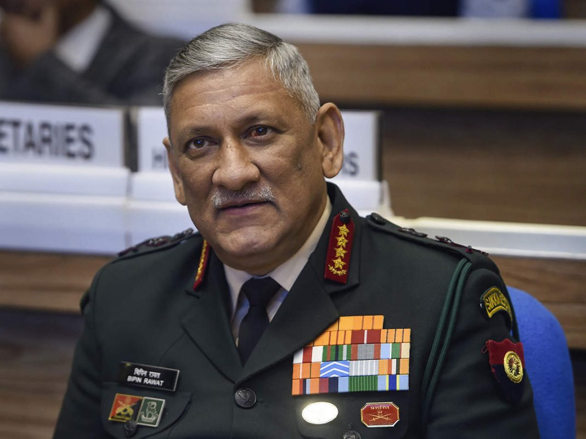
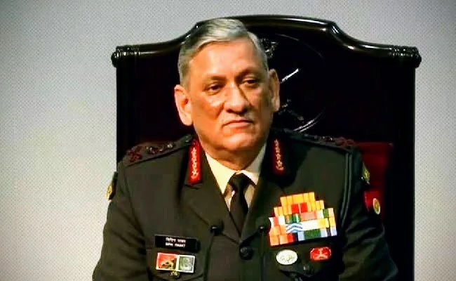
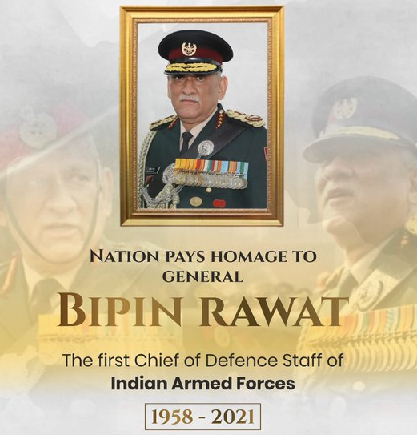

Tribute to General Bipin Rawat

General Bipin Rawat
Chief of Defence Staff
Biography
General Bipin Rawat served as the Chief of Defence Staff of India from January 1, 2020, until his untimely demise on December 8, 2021. He was an esteemed officer of the Indian Army and played a crucial role in various military operations. General Rawat was known for his strategic vision and commitment to national security.
Achievements
- First Chief of Defence Staff (CDS) of India
- Implemented significant reforms in the Indian military
- Led several critical operations to ensure national security
- Received numerous military honors and awards
Tribute
General Bipin Rawat's legacy of courage, leadership, and dedication will always be remembered. His contributions to the Indian Armed Forces and his unwavering commitment to the nation have left an indelible mark on the history of India's defense.